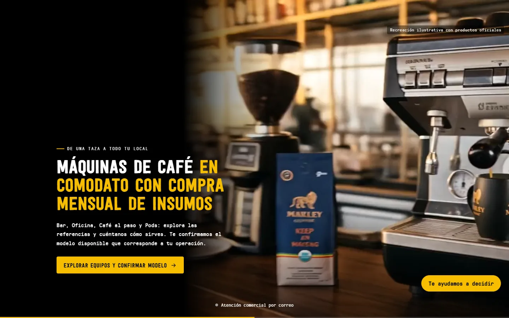
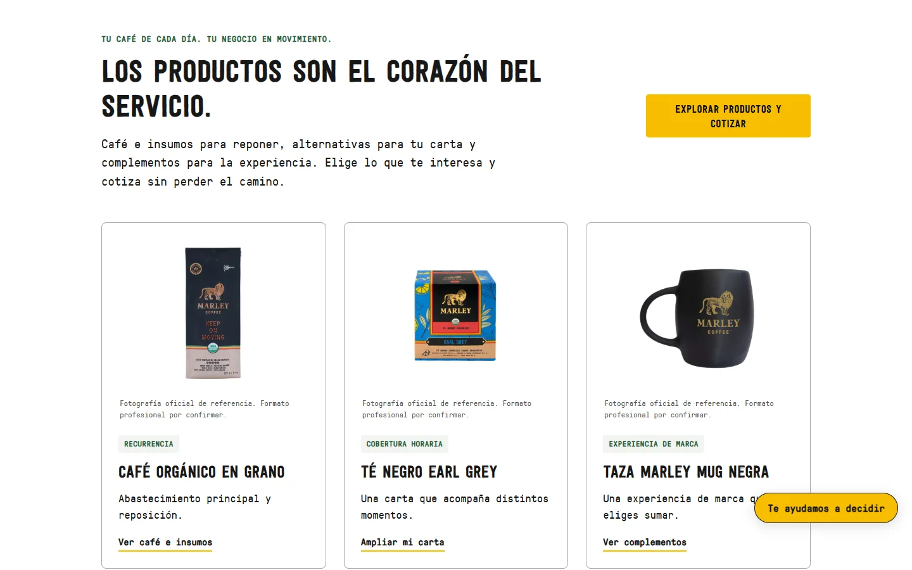
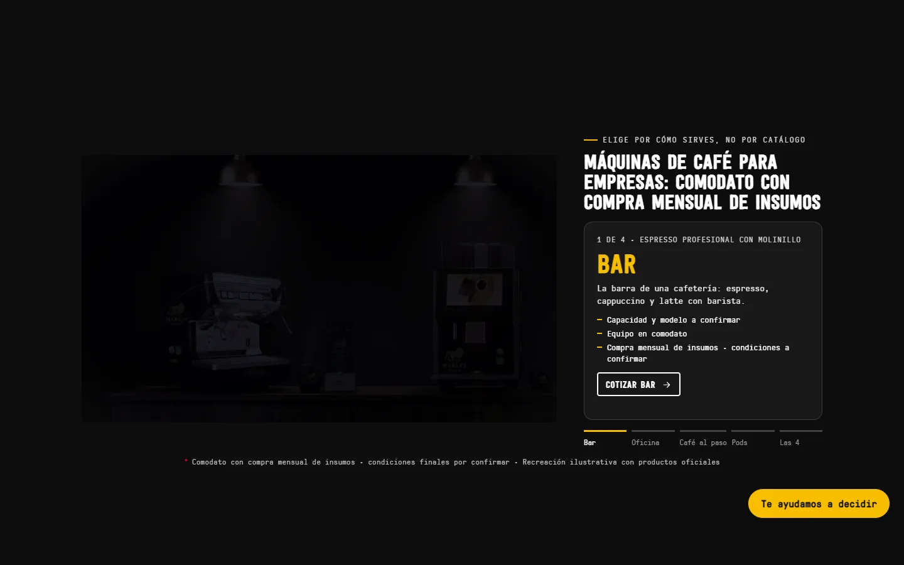

Poner café e insumos en el centro del recorrido
En el proyecto de título analizamos el modelo B2B de Marley Coffee. Distinguimos el préstamo de máquinas de la venta de café e insumos y evaluamos un prototipo para celular.
VER EL PROTOTIPO ↓Entender la propuesta de valor
El equipo analizó qué necesita entender un negocio antes de elegir. La máquina se presta; la oferta se centra en café, insumos y abastecimiento. La interfaz explica esa relación.
El recorrido y el benchmarking ordenaron la comparación desde celular.
Del modelo B2B al prototipo evaluado
Escuchar: ordené preguntas B2B. Analizar: separé préstamo de máquina y venta de insumos. Priorizar: puse productos y abastecimiento primero. Diseñar: estructuré el prototipo. Comunicar: ordené la propuesta B2B alrededor de café e insumos. Medir y evaluar: aplicamos los 10 principios de Nielsen y pruebas de acceso móvil.
Con IA: sintetizo hallazgos y reviso alternativas con el equipo para mantener coherente la navegación y la propuesta.
Ordené el recorrido y participé en la revisión académica.
Café e insumos primero
La propuesta distingue el préstamo de máquinas de los productos y organiza su revisión, el servicio y la continuación desde el celular.
El equipo evaluó el prototipo con los 10 principios de Nielsen y pruebas móviles. Los ajustes revisaron el acceso; no atribuyo mejoras comerciales.
El piloto no se ejecutó. No hay datos de conversión ni ventas atribuibles al trabajo. El resultado queda en evaluación de acceso y claridad del prototipo.
Prototipo para revisar desde celular
Las recreaciones del proyecto académico muestran portada, catálogo y servicio. El prototipo no está implementado en la empresa.



Analizar la propuesta y revisar su claridad
Analicé el modelo B2B, ordené información para empresas y revisé el prototipo móvil con el equipo. La evidencia distingue lo evaluado de lo aún no implementado.